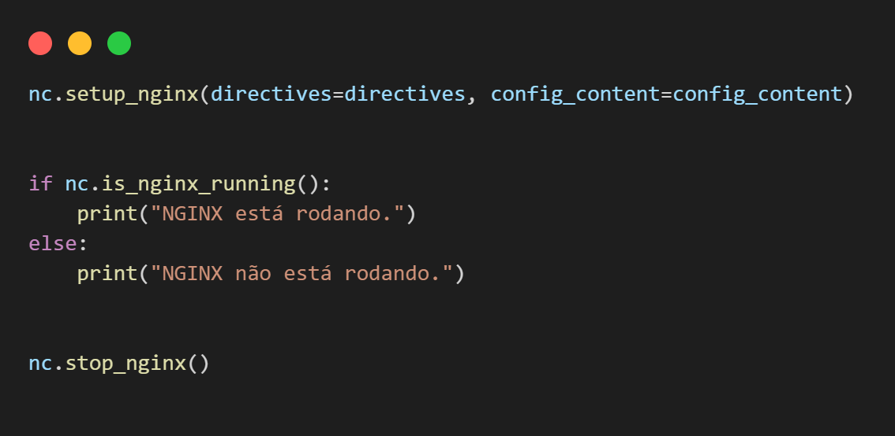

Aluno da UERJ
Felipe Pinheiro Feliciano, aluno do curso de Computação na Universidade do Estado do Rio de Janeiro (UERJ), destaca-se por sua especialização em Linux, especialmente com experiência em sistemas Debian, amplo conhecimento em Bash e Shell script avançado. É dedicado à aprendizagem contínua, dedicando seu tempo livre para estudar novas tecnologias.
